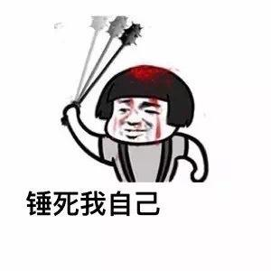

小小铁头娃是一个个人向作品，帮助广大网友借助星云链的特性决出最头铁的一个老哥2333333
整体风格以皮为主，游戏规则简单明确，穿插巧妙运用gas的设定～
规则介绍
1.任何玩家都可以通过"我头铁"来参加比赛，每次消耗0.0001nas，并且获得头铁称号
2.在1小时内保持称谓的玩家赢得比赛，获得奖金。
3.任何玩家新加入比赛，都会重置倒计时。
4.可以查看当前铁头娃与比赛奖金。
5.倒计时每分钟更新，请防备最后几分钟被其他玩家抢走称号～
6.不定期投入奖金池，如果没有人关注，那说不定就是你的机会把奖金都刷走XD
7.除了铁头娃没有任何方式可以取走合约里的奖金，可以到合约上查看。
8.捐款不会参与比赛，但是能够为奖金池增加奖金。
让我来看看现在谁最头铁
倒计时: 60 min
捐款双击666
我头铁周围的几个都能点哦，不过时间你就看看吧
我要清算